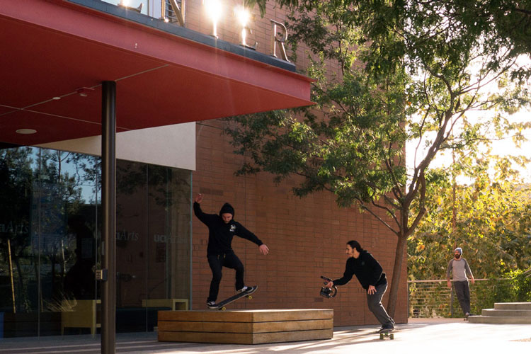

Example Modal Header

Some text about the image.
Some text about the image.
I have gone out on many sessions and observed numerous skateboarders and skateboard media makers in New York City and the greater Los Angeles area, as well as in digital spaces. I split the majority of my time focusing on three different groups of skateboarders. In New York City, from September to November, I spent time rolling around with a group of skateboarders endearingly known as, but definitely not self-proclaimed, the ‘Most Productive Crew’. When the winter months came I retreated to my home turf of Southern California, where the warmer weather allows for skateboarding year around. Here I spent time with a couple groups of skaters and skate media makers, most of which were my close friends and acquaintances from Los Angeles or Orange County. However, feeling the need to diversify my participants I reached out to Kim Woozy, who runs MAHFIA.TV, in search of a third group. Although I had never met Kim previously, she would graciously grant me access to observe her and a group of skaters in Long Beach, California. This group is a unique yet definite minority in this boys club culture, as in it consisted of all girls. Below are the narratives that chronicle the time spent with each group.
It was in the summer of 2015, while sitting in my seat in the Sunshine Cinema on East Houston Street in Lower Manhattan, when I really began take note of the unique situation I found myself witnessing. The Sunshine Cinema was packed with mostly young men, all skateboarders, anxiously waiting for the show to start. What was about to play was not a big budget Hollywood blockbuster, nor a low budget art film. What was about to play was Sure, an 18-minute long skateboard video shot and edited by Johnny Wilson. Skate videos, as shown in the video below, are a collection of clips, of mostly successfully landed tricks, strewn together to music.
When the video began to play, amidst a roar of enthusiastic support from the crowd, a collection of logos appeared superimposed over the opening shot. These logos were of mostly local websites and companies that had some sort of affiliation with Johnny and the skateboarders featured in video. The logos included Alltimers, Skate Jawn, and Quartersnacks. However, one logo loomed poignantly out of place, The Swoosh. The mega multinational footwear corporation, Nike Inc., was also backing this video. This is when I realized something very special is occurring here. By merely going out and doing what they enjoy in New York City, these young people had garnered the attention of the biggest sports brand in the world (Ozonian, 2015). It was then that I decided that I would like to spend much more time with this culture, to find out if what Nike see’s as marketable could also be viewed as educational.
Below I will recount the days I spent observing the filming process in New York City.
My first day out observing the Most Productive Crew would be on September, 19th 2015 in the Lower East Side. Johnny Wilson was the filmer on this session and was basically calling the shots, assuming a role that could be, albeit cautiously, the equivalent of a team captain. Johnny has put out numerous local videos featuring gritty yet creative skateboarding throughout New York City. His videos are often featured on SkateJawn and Quartersnacks, as well as his own personal Vimeo page. Both aforementioned websites have become well known online destinations to view innovative East Coast skateboarding that may not be featured in the California-based mainstream media outlets.
On this particular day, Johnny was with a pretty large crew, about 10 skateboarders or more. After skateboarding around Lower Manhattan the group eventually ended up at a destination in the Lower East Side, a stone's throw from the exit of the Manhattan Bridge. When we first arrived, many of the skaters just started messing around, getting a feel for the spot. The spot was a foot high brick pyramid in the middle of cement island on the corner of Bowery and Canal. As everyone else was just messing around, Andrew Wilson, Johnny’s older brother was attempting an ollie (getting the board off the ground) over the top of the pyramid. After only a few tries, he started getting close to successfully riding away. Johnny saw this and got out his camera, the Panasonic HPX170. Within only a couple of tries with Johnny recording, Andrew made (successfully landed) the trick. While trying the trick, Andrew had to navigate many distractions, such as cars, pedestrians, and bicyclists. Johnny had filmed this “long lens”, probably to capture the liveliness of the spot. Someone asked Johnny if he was going to film it “lens”, which would allow the camera to be physically closer to the action, but Johnny declined this suggestion. After Andrew landed it for the first time, Johnny decided there might be a better angle to capture this trick, and moved to reshoot it from another perspective. Very little discussion was had about this choice, as it seems that Johnny’s vision for the shot is quite respected among the group. Andrew tried the trick one more time, which he landed, and it is quickly agreed upon that the second one the better one. This clip only took about 10 minutes to successfully shoot, and eventually would end up in a video clip made by Johnnie, “Sequence 1”, which was used as an opening clip when the Nike Video “Chronicles 3” premiered in New York City.
Photo: Andrew battles a smith grind down the hubba while Johnny and crew look on NYC, NY 2015
I arrived to this session that occurred at the Coleman Park Hubba ledge without knowing what was planned. The ledge, a waist high concrete “handrail” that goes down a set of stairs, is located about 50 feet away from L.E.S. Skatepark, arguably New York City’s most popular skatepark. The ledge is not part of the skatepark nor was it designed for people to skate on, and is therefore eligible for legitimate tricks to be performed and captured on. Usually the ledge is behind a gate and rendered non skateable but today the gate was open. There was a considerable amount of people on this session, around 13-15, due to its proximity to the skatepark and the rarity of the open fence. At first there were a few people trying to film tricks on it, but due to the size of the ledge and the element of danger, this did not last long. Not before long, Andrew was the only one still attempting a trick. His brother, Johnny was setup at the bottom of the stair set, filming long lens. Due to the high risk involved, there was another camera present, as well as numerous cell phone cameras also recording the trick. It appeared as if the skaters looking on wanted to capture a piece of the action, so to speak. However, it was common knowledge Johnny’s footage and angle was the highest regarded. Andrew attempted this trick about 20 times over the course of 20 minutes. Each time Andrew tried the trick he got closer to successfully rolling away, yet he got more frustrated. This high-impact skating is stressful due to the constant presence of danger. Andrew persisted and within half an hour, he had filmed another trick with his brother and we were on our way to the next destination.
After meeting up with Johnny outside of his apartment, Conor, who was at time actively filming for this Quartersnacks part, asked if anyone knew where a certain spot was. He referenced tricks done on the spot in certain videos seen online and described what it was. Quickly Johnny recognized the spot and we shortly began skating over to it. The spot is on Great Jones, in between Bowery and Lafayette. It is two unassuming wheelchair ramps leading into buildings with a gap in between. The objective is to roll onto one ramp from the sidewalk and launch to the next ramp. This is the type of spot that really exemplifies the type of footage that has become synonymous with New York skateboarding and it’s portrayal in skate media. The antiquated architecture, the cracked sidewalk, and constant flow of pedestrians make for the quintessential New York City clip. Due to the perceived simplicity of the spot all the skaters on the session, John Choi and Conor and even myself, immediately began testing the waters, riding up and lightly attempting out tricks we think are possible for the spot and are within our ability. Eventually Conor and John would decide on the tricks that they thought would utilize the formation of the spot well. As they seem to hone in on a particular trick, Johnny sets up his camera, and puts on his fisheye lens. Conor tries a trick called nollie fullcab while john tries a trick called a 360 flip. They take turns trying their tricks, knowing that if they land the trick on the embankments, they will continue to push up the street and try to get as many tricks on film as possible. Within a half hour, John gets his 360 flip over the gap and tries some flatground tricks, tricks performed on the street not on a specific obstacle, but is unsuccessful. Johnny and John review the footage and deam the single 360 flip useable, despite the missed flatground tricks. From this point on it is just Conor. Throughout the couple hours spent at the spot, Conor lands the nollie fullcab three times, however each time he is not fully satisfied and continues to try. About two hours into the session, Conor concludes that he is too tired to keep trying and will settle for one of the lands he made previously.
we had numerous conversations about cameras, internet videos, and past or upcoming trips he has planned. As mentioned previously, Johnny and his videography skills are being sought out by Nike, Converse, Palace, and Supreme. In the past year he has been flown to Los Angeles, Paris, and Puerto Rico. In an interview with Johnny on Quartersnack.com, when asked, “Why didn’t you take the film school route like every other kid with a VX1000?” Johnny responded by saying “Because I only like filming skateboarding. I had no interest in filming movies or commercials. I still can’t picture myself doing that today.” In fact Johnny’s only form of post-secondary school was a year long culinary program. “It was only for a few hours, Monday through Friday, and a year-long program. I still had a ton of time to skate and film.”
It should be noted that Johnny is not the only person creating media in among this New York City group of skaters. Below are two accounts of sessions that occurred with other filmers.
This session was somewhat impromptu and contained a much smaller crew of just three people. Just Max Hull, the filmer, and Conor, the skater, plus myself. It was a weekday afternoon, so the session occurred when we had finished our respective daily responsibilities. We drove to this spot specifically for Conor to try and film a particular trick. As mentioned in the notes from the 10/12/2016 session, Conor was in the midst of filming a full part of just his skating that will be featured on Quartersnacks.com. It is apparent that this is motivating Conor to try to gather footage. As Conor starts getting close to the trick, Max gets out his camera. He uses a Sony-A7 DSLR with a fisheye lens. The fisheye is generally the lens of choice when filming a line, which entails the filmer closely following the skater. After Max sets up his camera, he began filming Conor. Conor would begin his line in the middle of Flushing Avenue in Brooklyn, come up the curb onto the sidewalk, run into the side of a building via embanked cellar door. If Conor landed this, he would then make his way down the street, maneuvering through bags of garbage, projecting off curb cuts, and performing flatground tricks in the street with oncoming traffic only a few feet away. Max would start on the sidewalk and let Conor gradually enter foreground. From there he would follow Conor to as long as the sequence of tricks was properly landed. If Conor missed a trick, they would both immediately pick up their boards and head right back to the same starting position. This cycle would occur over the course of the next hour and a half, with Conor and Max attempting to get the line around 60 times. Within this series of attempts Conor had to switch his plan up a few times, as certain tricks became irrelevant such as the removal of the garbage bag. Max continued to film, unwaveringly into the night. Eventually, as sunlight diminished, Max attached a camera light, to make sure the footage Conor was trying to collect would still be visible in the dark setting. At the end of the session, although not completely content with the clip they had gotten, Conor and Max concluded that one of the few lines could be used.
Photo: The DGK team films at a park in Williamsburg NYC, NY 2015
On this day, we headed out with no real direction and eventually ended up at a park with a few other crews, which formed to make one big crew. We were contacted by a New York skater named Kosta, who runs Quartersnacks.com, who told us the DGK team, the professional skateboarding team that ride for the DGK brand, were at the reggaeton ledges. The reggaeton ledges are a series of knee high ledges that run the parameter of a park in Williamsburg. They were named the reggaeton ledges after the music that is often played by the other patrons of the park. The DGK team was visiting NYC on a trip, filming for a video that would promote the upcoming line of Quartersnacks DGK collaborations. Upon first entering the park I immediately noticed three or four large camera bags. This conveyed to me that there would be a lot of filming happening this afternoon. Soon after arriving, the filmers had set up and started filming select skaters. This was pretty informal, and it seemed the filmers intuitively knew what to film from what person. This probably stems back to them knowing what tricks are at the caliber to be featured in the final video or not. At times there was one filmer filming lens, and at other times two filmers, either both filming long lens, or one lens and one long lens. To the untrained eye this might seem like a free for all with so many skaters and filmers rolling around, but this infact is a very efficient way to get footage. Within a matter of hours, the session easily rendered around 5 clips that would be used in the final video. Around the time the sun began to set, the session organically came to an end. The cameras were packed up and everyone said goodbye and went on their way.
Around December I would shift my focus to the West Coast. As mentioned earlier, this is where I grew up and spent countless days participating in this culture. Due to this fact, I was able to easily reach out to and find numerous skateboarders and skateboard media makers to participate in my ethnography. Spending these two winter months in Southern California turned out to be the most fruitful time for observations.
While out in Southern California, I was mostly based out of Orange County, but made numerous trips north to Los Angeles. It was in these two locations that I would follow around quite a few different media makers, who all happened to be very tightly intertwined. Coming up I will reference numerous media makers, however, the majority of my time would be spent observing and conversing with Grant Levy.
Grant, or “Skippy” as many of his friends know him, resides in Anaheim, California and is a prolific independent skateboard media maker in his own right. I have known Grant since we were both teenagers, he being five years my junior, and there is a running joke among mutual friends that he and I have a mentor-protege relationship. While I’m not totally ready to admit this distinction, I do offer Grant advice whenever possible and he is definitely not shy about asking me for assistance. We both contribute the website I built back in 2005, Irvine-Sucks.Com, and I have watched Grant advance as a video maker, seeing the progression in each video he puts out. Below is his most recent creation, Brainfreeze
Grant is currently a college student as California State University, Fullerton studying Film and Television. In his off time, he is almost always out skating and filming. Fortunately, during most of my time with in California, Grant was on Winter break and was extremely committed to filming skateboarding. Recently, some of his videos have been posted and shared on some of the biggest skate media outlets, such as Thrasher and Transworld, and regularly shoots with some of the area’s up and coming talent. All these circumstances came together nicely to create a perfect recipe for very productive ethnographic outings. Below are videos, photos, and notes from these sessions.
This was my first time observing outside of NYC. The crew was small, a carload including myself, the filmer, and two skaters. The two skaters were Massimo and Antoine, both sponsored by Deluxe Distribution brands. Being a sponsored skater means you have to produce footage, which means collect numerous video clips and photos each year. In return you will be rewarded, either with free product or by payment. Antoine is also a business owner, running the small yet highly demanded skateboarding brand out of Montreal, Dime. At the time of this ethnography, Antoine was filming for the yet to be released Dime Video in Los Angeles, CA. He wants this video to be entirely shot on the Sony VX1000, a standard definition camera that was basically the industry standard for well over a decade, until HD became widely available. Although out of production for now a decade and a half, the VX1000 is still adored by many skaters with a cult-like following. Grant, an adamant VX1000 user, made himself available to Antoine during his visit to California. The first spot we went to was at USC, right outside the Coliseum, where the USC Trojans Football team play. The spot is a semi-circular ledge, known as a curved ledge, with the objective being to grind or slide the entirety of the ledge, adjusting to the curve. Antoine and Grant had filmed a frontside bluntside on this ledge a few days prior but Antoine was not pleased with how it looked. He wanted to do it better and film it from another angle. He referenced the angle of a trick Massimo had filmed a few years prior.
While Antoine was warming up, Grant was filming the warm up with his phone. He would later string these lesser valued clips together for a post on Instagram. Once Antoine was warmed up, Grant figured out how to get the desired angle. He would need to back his car behind the ledge and stand on the trunk to elevate him well above the spot and Antoine.
After he found his angle, he set up his VX1000, got onto his trunk and began shooting long lens. In about half an hour Antoine had refilmed the trick to his liking. After reviewing the footage, Grant mentions he messed up the filming, but Antoine doesn’t seem to mind. He instead offers to “go to fakie”, which means he is going to try again, but ride away switch stance by turning out differently at the end of the trick. Grant adjusts his angle slightly on the trunk of the car, making sure when Antoine lands the trick to fakie, he will be ready. Again, this takes about 30 minutes and eventually Antoine lands the trick to fakie. The footage is reviewed, and the session is deemed successful.
Photo: Grant films Chris skate the bowl while some friends look on. Laguna Niguel, CA 2015
This observation was at an informal annual Christmas Day session at a closed skatepark in the South Orange County Suburban Laguna Niguel. This day was not about filming and gathering footage like the previous sessions. However, Grant took the opportunity to film some tricks at the park. Tricks filmed at skateparks are not always held in the same regard as tricks filmed at spots on the streets. This is due to the controlled setting of the skatepark. The ground is smooth, the obstacles are designed for skating, and there is not an illegal element, except for today because we had hopped the fence to skate the park during closed hours. This attitude did not necessarily dissuade Grant from filming, because ultimately all the footage filmed here would be used by himself for his own personal projects. Grant, in this instance, would just watch the skaters and if he saw something of he deemed good enough, he would shoot it. When Grant would begin filming one skater on a certain obstacle, the other skaters would notice and begin to try and skate the same obstacle as well. This would make it easy for Grant to gather the most clips. Due to this informal method, Grant was able to gather a good amount of footage of numerous skaters throughout the session.
Photo: Grant follows John at this UCI skate spot. Irvine, CA 2015
On this day, I met up with a large crew at University of California, Irvine at a plaza full of benches. When I rolled up, there were already people filming. Spencer was trying a trick on one of the wooden platforms while Richie filmed. Richie was using Spencer’s camera, which is a Canon Rebel T4i DSLR. Richie and Spencer are not really filming for a project and have no real extrinsic motivations. As this is going on, John begins getting close to a line, involving multiple benches. Grant see’s that Spencer and Richie are preoccupied and decides to take control over the filming of John’s line. 
At one point during this session, there are two separate lines being filmed by two separate filmers within the same crew. Eventually Spencer would actually stop trying his trick and switch roles with Richie. Now Richie was skating and Spencer was filming. All the while John and Grant were still trying to film their line. Eventually, after about an hour everyone had landed their tricks, and the crew left the spot with 3 lines on film.
Photo: Grant and Antoine consider the possibility of a certain trick on this famous USC ledge Los Angeles, CA 2015
Grant and Antione set out on another session in Los Angeles to collect footage for Antoine’s VX1000-filmed Dime part. We started out the day on the USC campus, skating some ledges that have long been in the skate-worlds public eye. As Antoine warmed up, Grant searched for where he would film the trick. Eventually Grant decided he would stand atop of a fire hydrant about 30 feet away from the ledge. He would not be up there long though, as this session was very short-lived. Antoine quickly realized the trick he wanted to try was not in his wheelhouse that day and told Grant to pack it up. The crew convened and would decide to take the session across town to a spot in West L.A.
This spot was a large embankment, caused by a tree root that broke the sidewalk and turned into a makeshift launch ramp. In the past, at least since the late 1990s, skaters have set up the neighbors trash cans next to the spot so they can launch over them. On this particular session, this is what we intended to do as well. Antoine setup the cans, ollied it a few times, and Grant got out the camera and began filming. Antoine was attempting a trick called a varial flip. He attempted this trick for about an hour but unfortunately never landed it. In the process of trying the trick, Antoine’s board got messed up and he asked Grant for a tool to fix what was causing him problems. Grant did not have one, so Antoine had to continue with dysfunctional board and ultimately would give up. As a filmer, it is common for skaters to ask for these types of associated favors. For some reason wax, tools, and spare parts are all in the purview of the filmer.
This was the first time going to this spot to film. I had been to this spot before, and it had already become quite infamous. Someone had posted a short video of this spot on Instagram, and geotagged it in Irvine. When Grant saw the post, he had to find out where it was. Eventually he found it, but not without some friction. He asked the person who posted the Instagram video where it was, but was not told the location, in fear he would blow up this dream spot. Grant then took upon himself to find it and “blow it” up. He took Chris Gregson there, who would get a photo on it for a clothing companies Instagram page. The person who had originally had posted the image of the spot got mad and made a comment. From there, Instagram arguments ensued.
With that aside, the spot is a drainage ditch that circled around a hill in a to-be-developed housing tract in Irvine, California. The ditch is a perfect semicircle that unintentionally mimicked the design of the halfpipe, a popular skateboard ramp , and continues at a slight angle for about 500 hundred feet, resulting in a very desirable spot. Chris wanted to film tricks here at night, to achieve a certain aesthetic. Grant was to shoot it on Chris’ HD camera, the A7 DSLR so the clip could be used in a professional project, but first Grant wanted to get a clip on his VX for his own personal project. By the time I had arrived, Grant and Chris had already gotten the VX clip, and were in the process of shooting the more valued HD clip. This clip entailed Chris coasting down the ditch, carving back and forth, performing tricks on both transitions while Grant followed behind him with the camera and an LED light. Since Grant was so accustomed to the VX, it took him a little while to adapt to the DSLR. The control buttons are in different spots and the lens performs differently than what he is used to so Chris, also a filmer, gave Grant a quick 2 minute tutorial and then they were off. This line took about 30 minutes to get.
Chris Gregson invited me to skate Omar Hassan’s pool one day in January. Omar Hassan is a veteran pro, who has a skateable backyard pool. Chris was going to shoot a photo for his clothing sponsor, Krew Denim. He wanted me to come because I have an HD camera, and he knows Krew wants HD footage as opposed to the VX’s standard definition. So in a few instances on this session I was the filmer. Grant was also there but only filmed things he knew he would use for his personal project. Anything that had the potential to be used commercially most likely needed to be HD. After Chris skated the pool and got his shots, we moved south to a drainage tunnel that runs underneath a highway that connects Irvine to Laguna Beach, CA. Here Chris would also try to shoot a few photos and video clips for his sponsors, and Grant would also ask to shoot some clips for his own video. To end the day, the crew returned to the snake run, where Oscar, a skateboarder on a trip from France, would film a line with Chris Gregson. To me, this day really exemplifies this culture’s use of and obsession with video. Of the 7 skateboarders that were on the session, one was there to shoot photos, and three brought along a vast collection of different video equipment. Over the duration of the day, nearly 3 hours of footage was shot, with maybe only 1 to 2 minutes being useable in the numerous videos that could end up online.
from this group do not include Grant personally, however everyone mentioned below is somehow connected to one another, which is apparent in some of the previous sets of notes as well. It should be apparent that this community is rather small and tight knit, and at times insular, with a visible path to professionalism. Below are observation notes from sessions with media makers Matt Bublitz, Richie Perry, Chris Burkhardt, and Ewan Bowman.
Later in the evening, John Demar sent me a text notifying me that him and Matt Bublitz were going to go some ledges nearby where I was staying in Orange County. The ledges are under a roof in a business complex. The area is well lit in the evening, making them great for skating when the sun goes down and everyone has left the offices. John was attempting to film a line with Matt for the second time at this spot. When I rolled up, I saw just John skating the ledges by himself. I looked over the dark parking lot, outside of the lighted area, and spotted Matt. Matt had a DSLR, a Panasonic GH4, on a tripod. I skated over to him and asked what he was doing. He said he was grabbing a quick timelapse before he started filming. He said he always likes to grab B-Roll before filming a trick. He showed me what he had shot so far and it looked amazing. This came off as very professional which is no surprise since Matt works for Thrasher Magazine, as a videographer. After he shot the B-roll, he began setting up. He would be filming this line lens, with an camera light on to add more light to the shot. This spot has a certain aesthetic that lends itself well to shooting at night. John tried his line for about half an hour, attempting to it over 40 times. Unfortunately, at the end of the night, John was unsuccessful.
This observation was a full blown production for Thrasher Magazine. There was a staff videographer, Ewan Bowman, a staff photographer, Rhino, a generator, and lights. The spot we were skating was the same drainage pipeline that ran under the 133 highway in between Laguna Beach and Irvine, California that was skated a few weeks earlier. On the sessions were a few professional skaters as well. This was an interesting observation, because the filmer and photographer were definitely professionals, and lifers. They were in their late 30’s / early 40’s and clearly had managed to turn their obsession and subcultural knowledge into a career. They seemed to know exactly what they wanted to get, and were formulaic with the whole process. They only shot certain tricks, ones the knew would get published in the magazine or featured in a video clip on the website. However, while professional, it was still very informal. Lights, extension cords, and the gasoline generator were placed haphazardly within the tightly packed pipe. If this was a professional shoot for a magazine or media outlet in another industry, this type of go-with-the-flow mentality probably would not be welcomed, but due to the fact that everyone here was a still a skater at the end of the day, these precautions were thrown by the wayside. This session lasted about 5 hours. It was dusty and dark and was filled with gaseous fumes. However, it was very productive. At least 6 or 7 really amazing tricks were filmed and photographed. After the session ended, Ewan made a point to get my number and email so I could pass along the footage I got to Thrasher.
This observation was a full blown production for Thrasher Magazine. There was a staff videographer, Ewan Bowman, a staff photographer, Rhino, a generator, and lights. The spot we were skating was the same drainage pipeline that ran under the 133 highway in between Laguna Beach and Irvine, California that was skated a few weeks earlier. On the sessions were a few professional skaters as well. This was an interesting observation, because the filmer and photographer were definitely professionals, and lifers. They were in their late 30’s / early 40’s and clearly had managed to turn their obsession and subcultural knowledge into a career. They seemed to know exactly what they wanted to get, and were formulaic with the whole process. They only shot certain tricks, ones the knew would get published in the magazine or featured in a video clip on the website. However, while professional, it was still very informal. Lights, extension cords, and the gasoline generator were placed haphazardly within the tightly packed pipe. If this was a professional shoot for a magazine or media outlet in another industry, this type of go-with-the-flow mentality probably would not be welcomed, but due to the fact that everyone here was a still a skater at the end of the day, these precautions were thrown by the wayside. This session lasted about 5 hours. It was dusty and dark and was filled with gaseous fumes. However, it was very productive. At least 6 or 7 really amazing tricks were filmed and photographed. After the session ended, Ewan made a point to get my number and email so I could pass along the footage I got to Thrasher.
happening daily in Los Angeles and Orange County made it quite conducive to gather the content and information I wanted. Because of the time spent here and my previous relationships with the participants, I was granted the opportunity to have deeper conversations about this culture, and how media and technology influence learning within it. I interviewed both Grant Levy and Matt Bublitz, two media makers who have had varying industry success and quite different trajectories, yet share many of the same insights and ideologies about how learning within this culture is occurring. Matt’s interview can read in it’s entirety here and Grant’s can be listened to here. Both interviews, along with the observations, will be examined in more detail within the upcoming analysis portion.
The last set of notes are from observing a group of skateboarders and skateboard media makers that represent the female minority in skateboarding. Early on in my research I had stumbled upon the website MAHFIA.tv. MAHFIA.tv is a multimedia rich website with that presents itself as “the global destionation for girls action sports media.” At first glance, although one would never know it by visiting other, more popular media outlets, it is widely apparent that action sports and media production is alive and well among girl participants. The website features an aggregate of multimedia dedicated to girls in action sports. Thumbnailed links of recently uploaded video and photo featurettes blanket the homepage, with content providing an in-depth look into these cultures. In addition to covering the culture, MAHFIA.tv also positions itself as a for-hire production company, capable of producing digital media aimed towards the highly sought after youth market. I immediately knew I wanted to include the girls involved with the site because it almost explicitly refers to how multimedia within this culture serves to empower its participants. The larger action sports culture is predominantly male, with media outlets neglecting to highlight female participants. MAHFIA.tv informs it’s audience, by way of a steady stream of content, that this community is just as vibrant, prolific, and capable as those who participate in the male-dominated action sports media outlets. After spending a considerable amount of time on the site, it appeared to me as if producers behind MAHFIA.tv bypassed the gatekeepers at other outlets, and leveraged the power of new media to broadcast their talents, and strengthen its community.
A few months after initially visiting the site, I decided that whomever was behind this site would be an ideal candidate for the ethnography. I found a generic email on the site and sent a request to speak with whomever was involved. Fortunately, Kim Woozy, founder and producer of the site responded. We set up a time to talk on the phone, which was where I learned more about Kim’s interests and vision as well as realized that for a brief period of time in January, we would both be in Southern California. From there we set up a tentative plan to meet up, skate, and film. Below are the notes from the meeting.
I met up with Kim Woozy, the founder of MAHFIA.tv at Cherry Park after the Agenda Tradeshow in Long Beach, CA. Kim was with a group of skaters and a couple other filmers, Monique and Erik. Pretty soon after arriving at the park, it began to rain so the crew decided go into a coffee shop to figure out their next move. It was here in the coffee shop that I was introduced to the skaters and got to hear about the various media projects they were working on. Eventually, the rain stopped and the ground dried up and we decided to stick around the park instead of going street-skating. Eventually Kim and Monique, another filmer began shooting the girls in the park, getting clips “just for Instagram”. While talking to Erik, one of the other filmers working with Monique on the upcoming all girl skate video project Quit Your Day Job, he let me know that because the girl skateboarding scene is so small, Instagram is one of the main ways they all connect. He said a lot of girls that want to get coverage or be featured in the video contact them through this app. While this was only my first time really skating with a mostly girl skate crew, I noticed there were many similarities, as well as some differences. I am definitely wary about making any substantial inferences just yet, due to the limited time spent with this crew, but most of the conversations that the girls were having mirrored what the guys talk about. Topics of conversations included learning tricks, going to spots, filming, sponsors, getting drunk, traveling, injuries, and their aching bodies. The topic of high impact and their bodies, while initially striking me as an interesting, differentiating factor, revealed itself as nothing surprising. Guys fall, girls fall. Aside from the similarities, I did notice this crew was more open to welcoming outsiders. They all seemed to be coming from much different places and converged together because they were all soldiers of the same struggle so to speak, they were girl skaters in a male dominated culture. Being cliquey, like a lot of the male crews I spent time with, may only weaken their community. This seemed to be, while maybe not overtly acknowledged, very important and understood. When it dried up and the girls started skating the park and gathering video footage, they would skate the same obstacle together in close succession to both be featured in the same clip. This informal and low-pressure style of skating and filming went on for a couple of hours and resulted in the instagram post below.
As the video above ends, the hashtag #killingitsoftly appears under the MAHFIA.tv logo. A quick click through videos tagged #killingitsoftly will reveal just how many skaters are out there trying to progress the girl scene via social media.
As the session ended, I thanked the skaters and Kim for letting me observe their scene. Unfortunately, due to time constraints and physical location, this would be the only time I would be able to observe this third group. However, after the session, I reached out to Kim and set a time a time to interview her at greater length, which can viewed below.
will take the information I have gathered and presented above and pull apart the what is happening in the vignettes above and see how this might align with the Connected Learning framework.